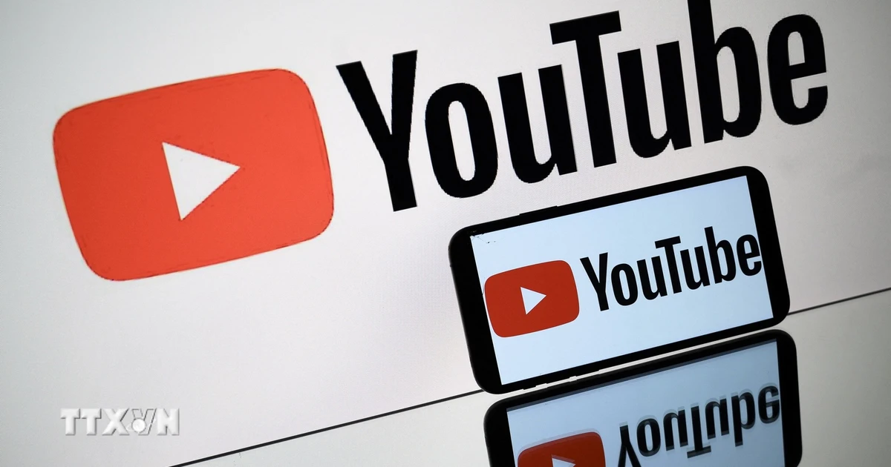

Youtube es una plataforma digital centrada en la publicación de videos, ya sea de larga o de corta duración.
Fue creado en febrero de 2005 y, posteriormente, en noviembre de 2006 fue adquirido por Google, de quien forma parte hasta día de hoy.
En la actualidad, Youtube es una de los sitios web más visitados por los usuarios, además de que cuenta con varias extenciones, como Youtube Studio o Youtube Music.
| Canales | Visitas totales | País de origen | Suscriptores | Fecha de creación |
|---|---|---|---|---|
| T-Series | 348 mil millones | India | 316 millones | 13/mar/2006 |
| Cocomelon | 224 mil millones | Estados Unidos | 203 millones | 1/sep/2006 |
| SET India | 190 mil millones | India | 190 millones | 20/sep/2006 |
| Kimpro | 149 mil millones | Corea del Sur | 135 millones | 11/nov/2017 |
| Sony SAB | 145 mil millones | India | 106 milones | 4/ago/2007 |
| Mr. Beast | 133 mil millones | Estados Unidos | 528 millones | 19/feb/2012 |
| Kids Diana Show | 125 mil millones | Ucrania | 139 millones | 12/may/2015 |
| Vlad and Niki | 122 mil millones | Rusia | 151 millones | 23/abr/2018 |
| Like Nastya | 121 mil millones | Rusia | 134 millones | 6/dic/2016 |
| Toys and Colors | 120 mil millones | Estados Unidos | 83 millones | 17/mar/2016 |

El primer video subido a Youtube data del 23 de abril de 2005, titulado Me at the zoo, y es el que se puede ver a continuación.